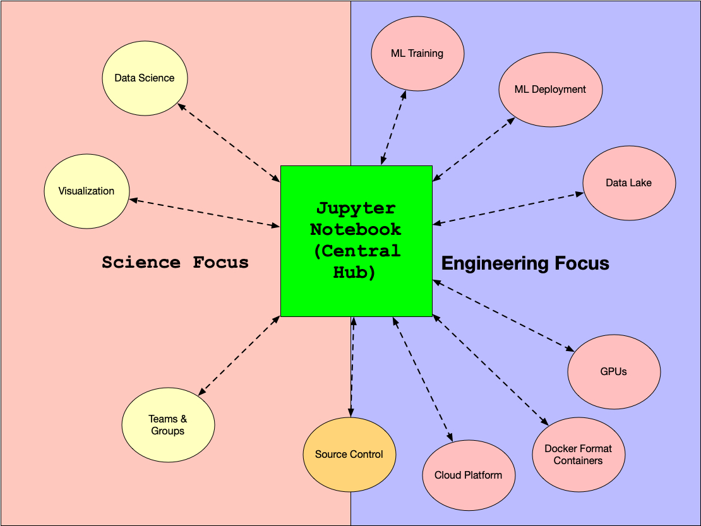

Notebooks such as Jupyter and Colab provide an interactive environment where code, output, visualizations, and explanations coexist. They are widely used for experimentation, analysis, and prototyping.

Local storage is unreliable and not scalable. Cloud storage enables notebooks to work with large datasets, share results, and support collaboration.
Notebook → Read data from cloud storage → Process & train model → Save outputs back to cloud storage → Share with team
| Cloud | Storage Service | Used With |
|---|---|---|
| AWS | Amazon S3 | Jupyter (SageMaker) |
| Azure | Azure Blob Storage | Azure ML Notebooks |
| GCP | Google Cloud Storage / Drive | Colab / Vertex AI |
In real projects, notebooks are connected directly to cloud storage for data ingestion and model output.
Use Case: Vehicle health prediction.
Integrating notebooks with cloud storage transforms isolated experiments into scalable, collaborative ML workflows. This skill is essential for modern ML engineers.